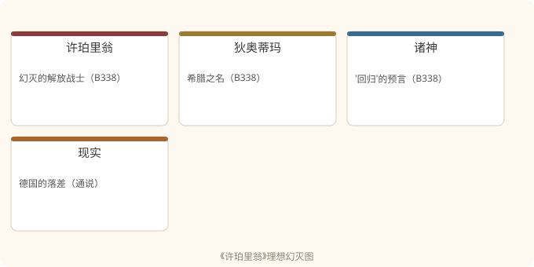

许珀里翁
一、基本信息
| 作者 | 弗里德里希·荷尔德林 |
|---|---|
| 成书/出版 | 1799年（Britannica B338：Hyperion 第二卷1799年出版——第一卷以断片刊于席勒《新塔莉亚》） Friedrich Holderlin — Encyclopaedia Britannica（百科全书） |
| 国别/地区 | 德国 |
| 时代 | 近代 · 18世纪90年代 |
| 体裁 | 书信体小说 |
| 语言 | 德语 |

《许珀里翁》理想幻灭图（主题·结构图）
二、创作背景
Britannica（B338）：Hyperion——'elegiac story of a disillusioned fighter for the liberation of Greece'（哀歌体的、幻想破灭的希腊解放战士故事）——未完成。
Britannica（B338）：苏塞特·贡塔尔在书中以希腊名'Diotima'出现。
Britannica（B338）：荷尔德林——'a prophet of spiritual renewal, of "the return of the gods"'；他把希腊诸神看作'real living forces whose presence manifests itself to humans in sun and earth, sea and sky'。
三、内容脉络
希腊解放战士许珀里翁的幻灭：从革命理想退回美的回忆（B338：disillusioned fighter for the liberation of Greece；书信体情节通说待核）。
'狄奥蒂玛'：爱情与希腊理想的化身（B338：Susette Gontard under the Greek name of 'Diotima'）。
四、主要人物表
| 人物 | 身份 | 说明 |
|---|---|---|
| 许珀里翁 | 书信体叙述者 | （B338 书名人物） |
| 狄奥蒂玛 | 爱人 | （B338：Diotima——原型苏塞特·贡塔尔） |
五、主题与艺术特点
- 希腊理想与德国现实之落差（B336 无关——B338：disillusioned fighter 语境）。
- '诸神回归'的精神更新预言（B338：a prophet of spiritual renewal）。
- 哀歌体：面饼与酒的乡土之爱（B338：Brod und Wein 同期哀歌）。
六、影响与评论
- Britannica：'almost totally forgotten for nearly 100 years'后于20世纪初重新发现，今列最伟大的德语诗人（B338）。
Friedrich Holderlin — Encyclopaedia Britannica（百科全书） - Britannica：'especially admired for his uniquely expressive style'（B338）。
Friedrich Holderlin — Encyclopaedia Britannica（百科全书）
七、阅读建议
难点
- 书信体与哀歌语体的交叉。
- 德国观念论与希腊崇拜背景（通说待核）。
- 中译名待核（《许珀里翁》/《徐培里翁》）。
- 德文原版（公有领域）。
荷尔德林首选；后接《面饼与酒》等诗。
八、待核实
- 中译名两说待核。
- 第二卷1799（第一卷1797-98断片说）核对。
- 《恩培多克勒之死》三稿细节待核。
本页主要来源
相关作品：浮士德德国，一个冬天的童话
弗里德里希·荷尔德林的其他收录作品：许珀里翁